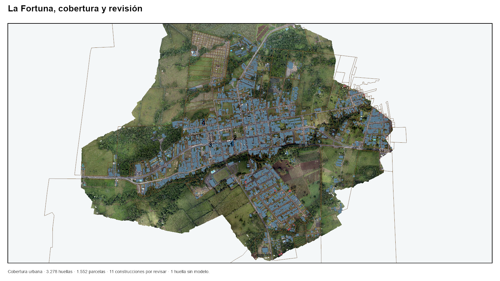
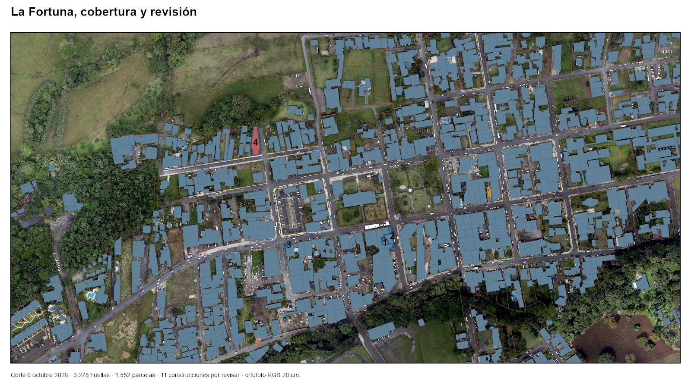
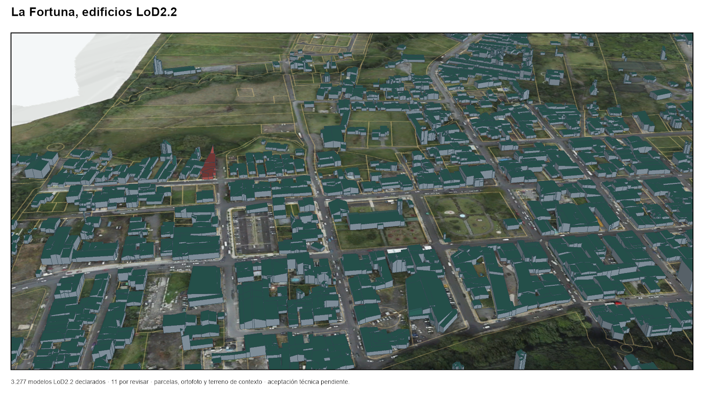

Edición 2.0 · 12 de octubre de 2026
Taller interinstitucional de información territorial de La Fortuna
QGIS, teledetección, catastro 3D y acuerdos de actualización.
4 horasmañana o tarde
5 mesastrabajo sectorial
24–30participantes
5 productosentrega verificable
Cargando contenido…

Alcance. El taller usa el piloto urbano de La Fortuna. La ampliación distrital depende de controles, responsabilidades y autorizaciones acordadas.
Punto de partida
Proyecto municipal disponible
ArcGIS Pro concentra la evidencia actual. QGIS y GDAL se usan para el ejercicio práctico. ArcGIS Online permite revisar los elementos privados autorizados.


240 minutos
Una secuencia para mañana o tarde
Los horarios se expresan desde el inicio de la sesión. La misma agenda funciona de 08:00 a 12:00 o de 13:00 a 17:00.
Total comprobado: — minutos.
P01–P05
Módulos y evidencia
P01–P02 utilizan el paquete público en QGIS. P03 es una demostración municipal restringida. P04–P05 documentan vacíos, responsables y acuerdos.
Avance en este navegador
0 de 5 módulos
Cinco preguntas
Mesas sectoriales
Cada mesa entrega una decisión registrable. La invitación solicita una persona técnica y otra con capacidad para acordar responsabilidades.
Antes de convocar
Preparación de la sesión
La convocatoria se emite cuando los datos, equipos, funciones y productos están confirmados.
Las notas quedan en este navegador. Use “Descargar notas” para conservar una copia.
Archivos de trabajo
Materiales y productos
El paquete contiene datos recortados para La Fortuna y un proyecto QGIS. Las plantillas registran observaciones y acuerdos.
Descargas
Productos exigidos
Datos excluidos de la copia docente
Nombres de propietarios, identificadores personales, ubicaciones de especies sensibles e infraestructura crítica. Cada fuente mantiene su licencia y condición de acceso.
Método y atribución
Fuentes
El diseño toma como referencia ejercicios publicados por MLSpAnFOSS sobre Raster Calculator y GDAL. Esta adaptación municipal no cuenta con acreditación, aval o patrocinio de sus organizadores.
Licencias
Código: MIT. Textos originales: CC BY 4.0. Las marcas municipales, tipografías de marca y datos de terceros quedan fuera de esas licencias y conservan sus condiciones propias.
Leer condiciones y atribuciones